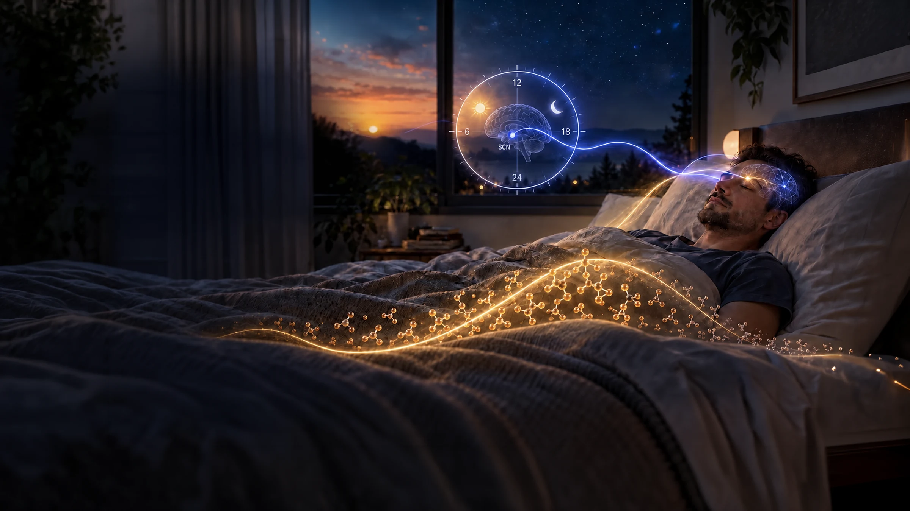
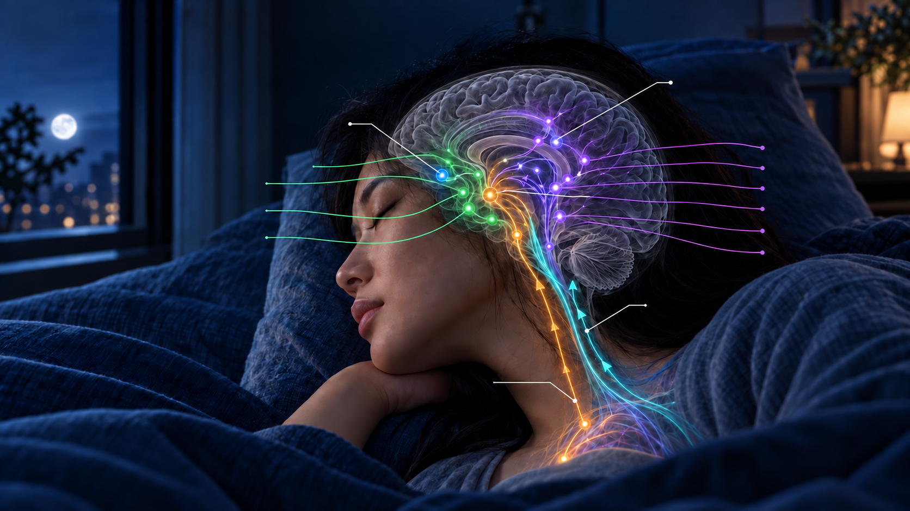
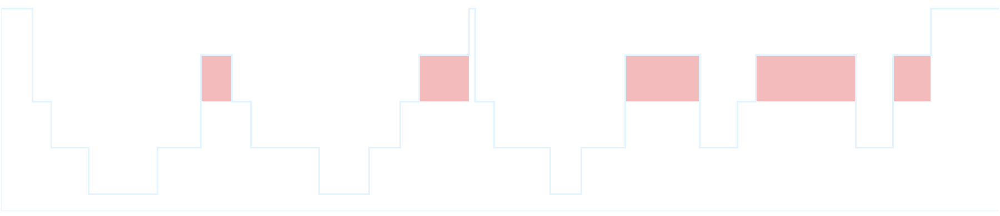
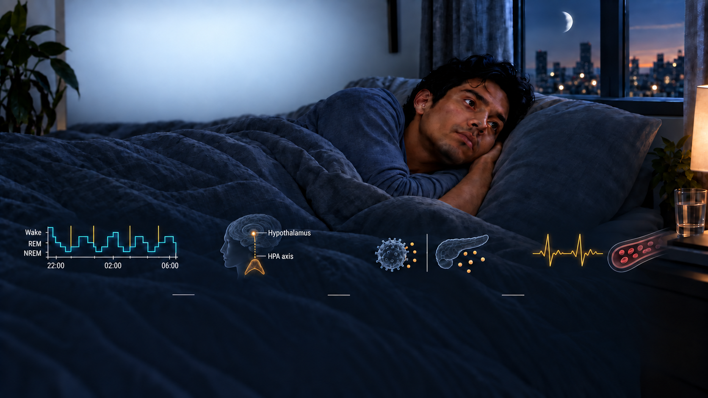
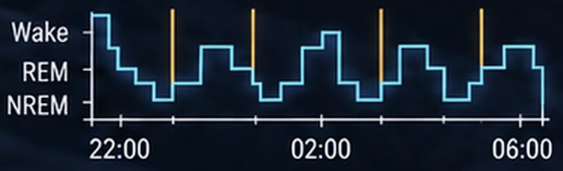
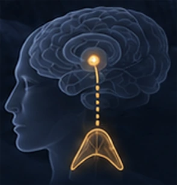
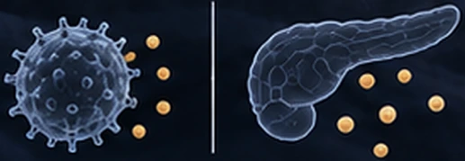
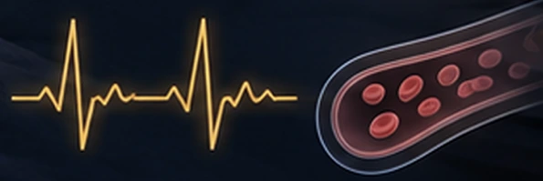
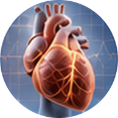
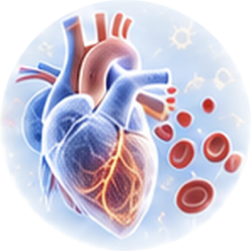

Sleep × Systemic Health
The Body Restores While We Sleep
Sleep Is an Active State of Biological Restoration
Sleep is not simply the absence of wakefulness.
Across recurring NREM and REM cycles, the brain
and body reorganize neural activity, endocrine timing,
autonomic balance, immune regulation, metabolism
and cardiovascular function.
These coordinated processes help consolidate
memory, regulate emotion, support tissue repair,
maintain metabolic control and prepare the body
to adapt to the demands of the following day.
A&S places strong emphasis on sleep as a critical
foundation of systemic health, with particular attention
to how circadian timing, stress, lifestyle, sensory
surroundings and the personal exposome shape sleep—
and how sleep, in turn, influences systemic homeostasis,
resilience and healthy aging.
- Neural Restoration
- Endocrine Timing
- Immune Balance
- Metabolic Regulation
- Cardiovascular Recovery

The Two Forces
That Build Sleep
Circadian Timing × Homeostatic Sleep Pressure
Sleep emerges from the interaction of two biological processes. The circadian system organizes the timing of sleep and wakefulness, while homeostatic sleep pressure accumulates across time awake and declines during sleep.
Circadian Timing
Coordinates the biological window for sleep and wakefulness across the 24-hour day.
Homeostatic Sleep Pressure
Builds progressively during wakefulness and is reduced through sleep.
Their interaction influences when sleep begins, how deeply it develops and how long it can be maintained.

The Neurobiology of Sleep Regulation
Central integration networks coordinate circadian, emotional,
endocrine and autonomic signals with sleep-promoting and
arousal systems across wake, NREM sleep and REM sleep.
Sleep-Promoting & Restorative
- GABAergic Sleep Drive
- Melatonin Signaling
- Glutamate–GABA Balance
Wake & Arousal
- Orexin (Hypocretin)
- Histamine
- Norepinephrine
- Serotonin (5-HT)
- Acetylcholine
- Dopamine
- SCN
- Circadian Clock
- Limbic System
- Amygdala · Hippocampus
- Hypothalamus
- Integration Hub
- Autonomic Nervous System
- Sympathetic · Parasympathetic
- HPA Axis
- Endocrine Stress Regulation
Sleep Architecture
Across the Night
NREM and REM sleep unfold in recurring cycles whose duration and composition change as the night progresses.

One sleep cycleBrief awakeningBiological Restoration During Sleep
During sleep, coordinated neural, glymphatic, autonomic, endocrine,
metabolic and immune processes support physiological recovery
and long-term resilience.
- 01
Neural Recalibration & Memory
Neurotransmitter systems shift across NREM and REM sleep.
Synaptic remodeling and memory consolidation support adaptive learning. - 02
Glymphatic Clearance
& NeuroprotectionCSF–interstitial exchange increases during sleep,
supporting metabolite clearance.
Cellular repair and proteostasis contribute to long-term
neural resilience. - 03
Autonomic & Cardiovascular Recovery
Reduced sympathetic tone lowers cardiovascular demand.
Heart rate and blood pressure typically decline during stable NREM sleep. - 05
Immune Homeostasis
Sleep modulates cytokine signaling, immune surveillance and immune memory.
Balanced inflammatory activity supports tissue recovery and host defense.

How Disrupted Sleep
Affects the Body
Insufficient, fragmented or misaligned sleep can interrupt
nightly recovery—from sleep architecture and central
stress regulation to peripheral biology and long-term
systemic resilience.
-

01Sleep Architecture
BreakdownFrequent awakenings and circadian
misalignment reduce continuity
across NREM and REM sleep. -
02

HypothalamusHPA axisCentral Stress
DysregulationPersistent arousal can alter
HPA-axis activity, cortisol
timing and autonomic balance. -

03Peripheral Biological
DisruptionInflammatory signaling may rise
as immune regulation and insulin
sensitivity decline. -

04Cumulative Systemic
StrainRepeated disruption can increase
cardiovascular and metabolic burden,
weakening recovery over time.
When Sleep Disruption
Becomes Biological Burden
Repeated sleep disruption can repeatedly activate stress-response systems
while limiting recovery. Over time, incomplete recovery allows physiological
strain to accumulate across interconnected systems.
Repeated Sleep
Disruption
Frequent awakenings ·
Fragmented sleep ·
Circadian misalignment
Accumulating Allostatic Load
Allostatic load is the cumulative physiological burden produced
when adaptive stress-response systems are repeatedly activated
without sufficient recovery.
Repeated activation + incomplete recovery → cumulative multisystem strain
Cumulative physiological burden over time
Disrupted
Circadian RhythmNeural
Persistent arousal ·
Reduced cognitive
recoveryEndocrine
HPA-axis activation ·
Cortisol rhythm
disruptionImmune
Inflammatory
signaling · Impaired
immune regulationCardiovascular
Elevated sympathetic
tone · Reduced
autonomic recovery
Potential Long-Term
Health Risks
Neurocognitive &
Mental HealthCognitive decline ·
Mood dysregulation ·
Stress vulnerability
Cardiometabolic Health
Insulin resistance ·
Hypertension ·
Cardiovascular dysfunctionImmune & Inflammatory
BalanceImmune dysregulation ·
Persistent low-grade
inflammationBiological Aging & Resilience
Impaired repair ·
Reduced resilience ·
Functional decline
Conditions That Shape
Restorative Sleep
Biological Alignment, Arousal Regulation and Supportive Context
Restorative sleep emerges when circadian timing, arousal state and
behavioral–sensory conditions work together to support sleep onset,
continuity and physiological recovery.
-
01
Sleep Opportunity & Circadian Alignment
Adequate sleep opportunity · Consistent sleep–wake timing
Supports sleep timing and continuity
Morning light exposure · Circadian realignment -
02
Arousal & Emotional Regulation
Stress and emotional state · Cognitive and physiological arousal
Supports sleep onset and stable sleep
Pre-sleep relaxation · Clinical support when indicated -
03
Behavioral & Sensory Context
Daily routines · Physical activity · Meal timing · Pre-sleep habits
Supports sleep continuity and restorative quality
Light · Sound · Temperature · Touch · Olfactory cues
Sleep
Regulation
Sleep Onset · Continuity · Physiological Recovery
Sleep &
Multisystem Health
Restorative sleep is associated with
coordinated function across neural,
psychological, metabolic, immune
and cardiovascular systems.
- 01
Brain Health & Cognition
Learning · Memory · Attention
- 02
Mood & Mental Resilience
Emotional regulation · Stress adaptation
- 03
Immune Health
Immune regulation · Inflammatory balance

04Metabolic & Cardiovascular Health
Glucose regulation · Energy balance ·
Blood pressure · Autonomic balance- 05
Healthy Aging
Long-term function · Resilience